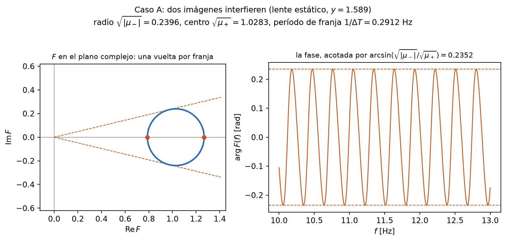
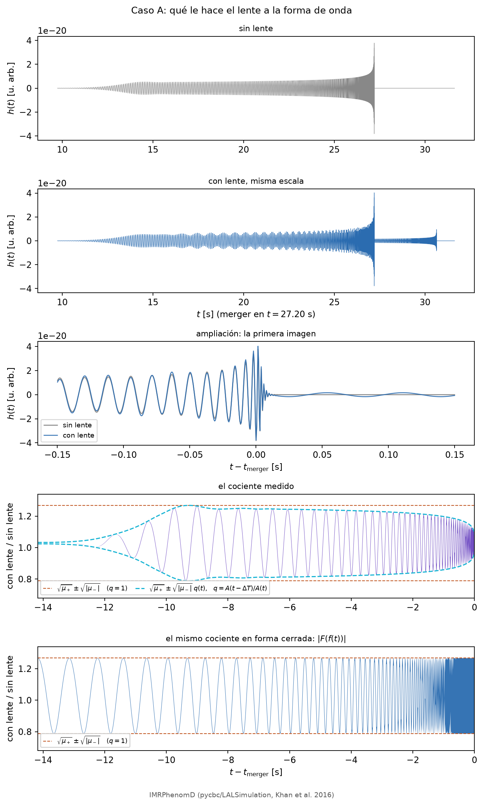
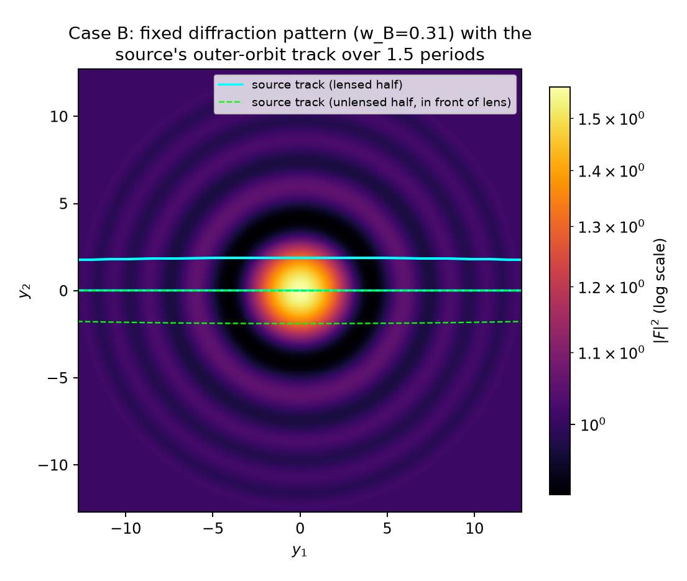
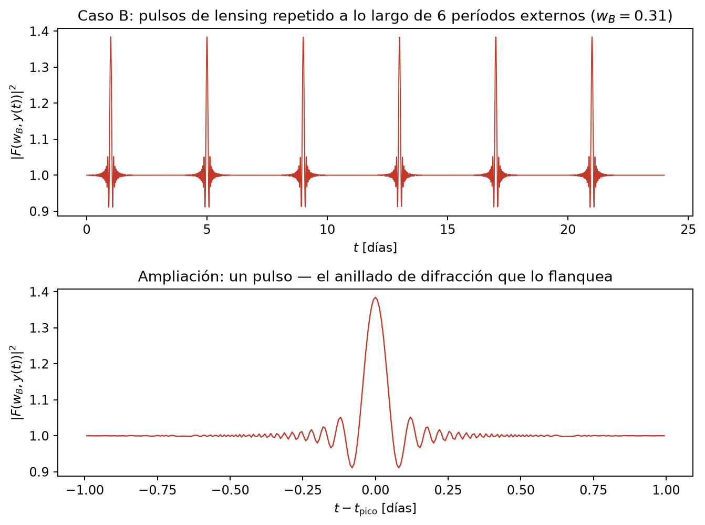
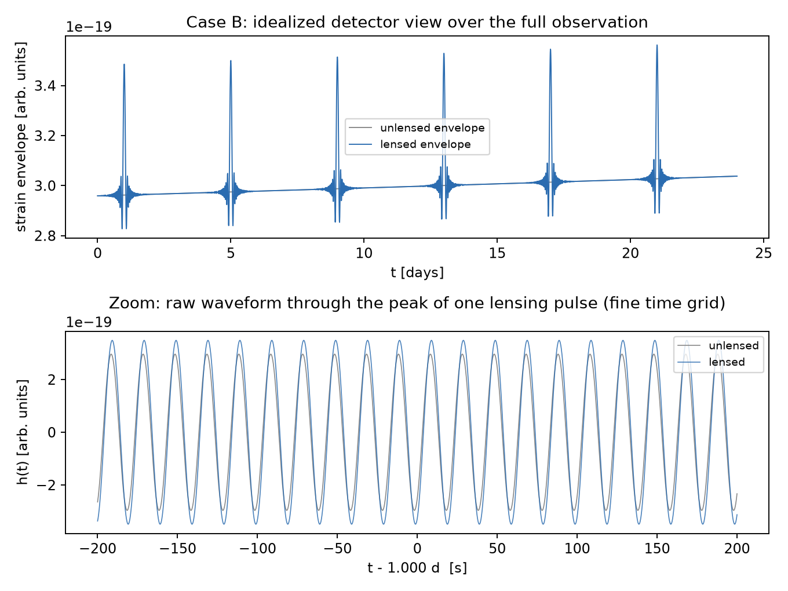

Wave-Optics Gravitational Lensing of Gravitational Waves
in a Hierarchical Triple
We compute how a gravitational wave (GW) from a compact binary is lensed, in wave optics,
by a third, more massive body in the same hierarchical triple, for the same triple at two
epochs of the inner binary's inspiral: a late chirp (lens frozen for the whole observation)
and an earlier, quasi-monochromatic phase (the outer orbit's motion is resolved, producing
periodic “repeated lensing”). All figures and numbers here are produced by the
scripts in cases/, checked against independent methods in tests/,
and derived from first principles in
theory/theory.pdf, which this document does
not repeat. This page/PDF is the results; the repository behind it
(README.md) is what makes them reproducible.
1. The system
One hierarchical triple (src/gwlens/system.py), followed at two points in its
own evolution:
| Inner binary (the source) | m1=20 M⊙, m2=15 M⊙ (chirp mass 15.05 M⊙) |
|---|---|
| Lens | ML=5×104 M⊙, at DL=5 kpc |
| Outer orbit | aout=1.82 AU, Pout=4 d, iout=87°, circular |
The lens mass is chosen (not astrophysically typical) so that the wave-optics parameter
w = 8πGMLf/c³ is not extreme at either epoch's frequency; the
hierarchy ain « aout holds by 2–6 orders of magnitude at both.
Full justification: theory/theory.pdf Ch. 1, §6.1; regime checks:
tests/test_system.py.
2. Case A — the chirp, static lens
The inner binary inspirals from f=10 Hz to fisco=125.6 Hz in
15.18 s — 4.4×10−5 of the 4-day outer
period, so the lens sits at one impact parameter, yA=1.589 (the phase of closest
projected approach during the outer orbit), for the entire chirp. The unlensed waveform is the
restricted TaylorF2 (2PN) frequency-domain post-Newtonian inspiral — the functional form used
in real LIGO/Virgo matched-filter search templates, not a hand-built approximation
(src/gwlens/taylorf2.py).

tests/test_waveoptics.py validates the fast geometric-optics evaluator against
the exact closed form to <4%, so this is genuinely wave interference, just too densely
packed to resolve at the full-band scale: the checked transition toward geometric optics as
merger approaches.

Peak-sample amplification is 1.038; RMS amplification (averaged over the whole chirp) is 1.056. These being close but not equal, despite |F| ranging 0.79–1.27 across the band, is itself informative: F(f) modulates phase as well as amplitude, so the lensed waveform is a dephased copy of the unlensed one, not simply a rescaled one — a genuinely wave-optics statement (in the geometric-optics limit, lensing is just a real magnification).
3. Case B — quasi-monochromatic, moving lens
Earlier in the same inspiral: f=0.05 Hz, drifting only 4% over a 24-day (6 outer period) observation, with 60.2 outer periods still left before merger — quasi-monochromatic. wB=0.309 throughout (fixed; only the impact parameter y(t) varies): squarely in the diffraction-dominated regime.


Because the lens and source are in the same system rather than at the usual
well-separated cosmological distances, DLS(t) is set by the outer orbit itself and
vanishes twice per period; exactly half the orbit turns out to be unlensed
(source in front of the lens, not behind it, so no lensing geometry exists there at all — not
an approximation, F=1 by construction). This is the origin of the periodic pulses above, the
wave-optics analogue of the “repeated lensing” found in the geometric-optics limit
by D'Orazio & Loeb (2020). Full derivation: theory/theory.pdf §4.2–4.3
(which also quantifies exactly how far this pushes the standard thin-lens approximation, and
shows the effect is confined to a ∼60 s window per crossing, coincident with the
already-trivial F≈1 region — not a concern for anything shown here).

4. What the two cases show together
The same lens, the same formalism, two very different-looking signatures, governed entirely by one timescale ratio (merger duration vs. outer period vs. observation length):
- Case A: a single, frozen diffraction pattern sampled at one point, swept across in frequency by the chirp itself — dense interference fringes, checked to approach the geometric-optics limit as w→∞.
- Case B: the same kind of pattern, at fixed frequency, sampled in time by the outer orbital motion — periodic pulses, with exactly half the orbit unlensed by the triple's own geometry.
- Both cases: lensing is not simply “make it brighter.” F(f) (or F(t)) is complex, and its phase leaves a real, checkable mark on the waveform beyond an overall amplitude.
5. Scope and limitations
Stated explicitly, not left implicit (each also logged in wiki/log.md at the
point it was decided):
- Point-mass lens only; no extended mass distribution.
- TaylorF2 truncated at 2PN (Case A); Case B's underlying frequency evolution is leading-order only.
- No absolute strain calibration (inclination/polarization prefactors folded into an O(1) constant) — only relative amplitudes and the lensing amplification factor are physical claims here.
- The idealized detector view has no noise, antenna pattern, or matched filtering — illustrative only, as scoped from the start.
- The thin-lens/paraxial approximation is quantifiably pushed near each Case B front/back crossing (§3); shown not to affect anything reported.
Reference
- D'Orazio, D. J. & Loeb, A. (2020). Repeated gravitational lensing of gravitational waves in hierarchical black hole triples. Physical Review D, 101, 083031. doi:10.1103/PhysRevD.101.083031